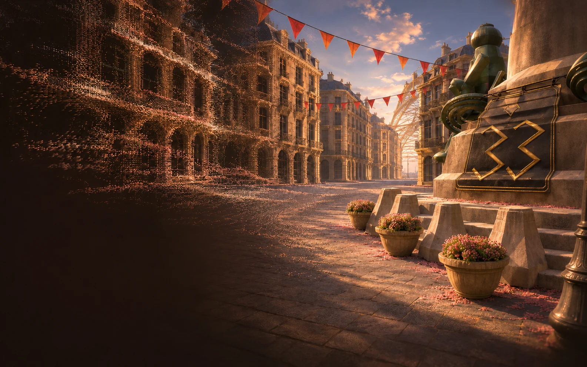
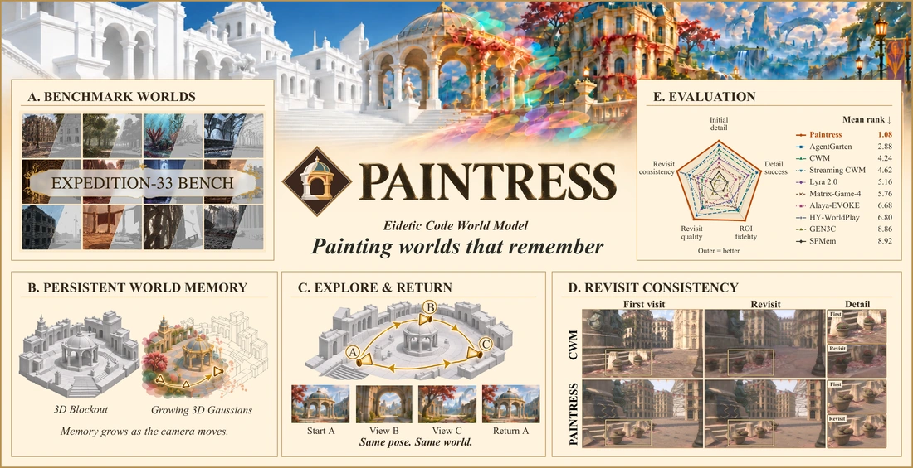
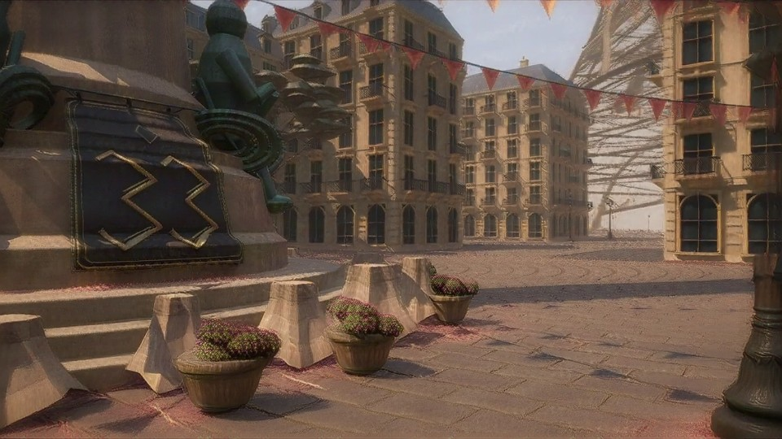
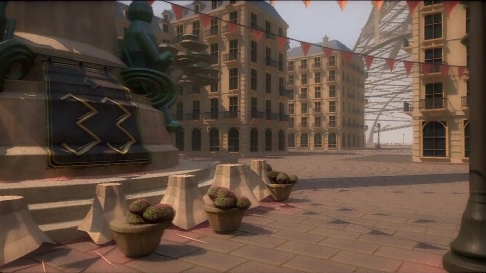
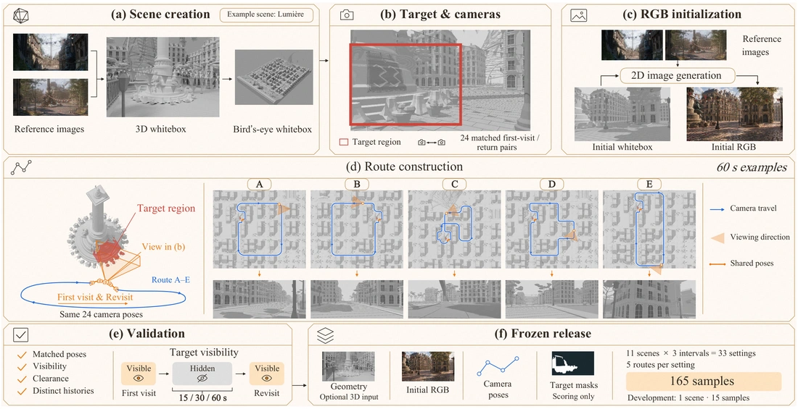
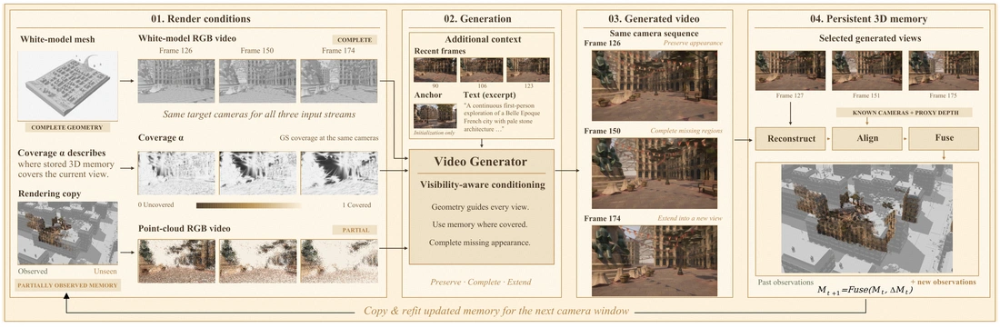
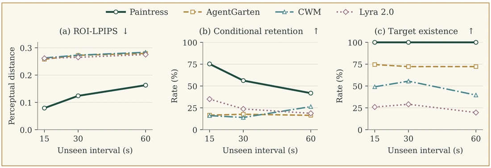

Eidetic Code
World Model
A persistent visual memory for generated worlds.
Watch the explainer (4:31) Compare the frames
First visit
Use arrow keys to choose a time, then press Enter to view that frame.
Matched return
Lumière
Concept illustration
What survives the return?
See how Paintress records the appearance of a place and how Expedition-33 compares ten systems when the camera returns.
4 min 31 sec · English narration and on-screen English captions
A world that remembers
What should the camera find when it comes back?
The first visit gives each place its appearance. Panel D follows the banner and flowerpots at the Lumière memorial as the camera returns to the same view.

Return to Lumière
Look for the gold “33” and the three flowerpots.


Drag to compare
Paintress generated both views. The camera turns away from the memorial, then returns to the same spot.
Play the full routeExpedition-33
Different journeys end at the same camera poses.
Across 11 scenes, five route families take the camera away from a target for 15, 30 or 60 seconds. Each return retraces the first-visit poses so details can be compared from the same angle.

How Paintress remembers
Geometry fixes the layout. A separate memory stores what the camera saw.
The scene code and a persistent 3D Gaussian map share a coordinate system. Before generation, a reader refines a copy of the map against past views. Newly generated frames then update the persistent map.

Compare the models
What survives when the camera returns?
Each pair shows one model’s first view and its return to the same camera pose after the target has been out of sight for 15 seconds.
Watch the same route
CWM
Play routeStreaming CWM
Play routeAgentGarten
Play routeGEN3C
Play routeSPMem
Play routeAlaya-EVOKE
Play routeHY-WorldPlay
Play routeLyra 2.0
Play routeMatrix-Game-4
Play routeResults
Paintress retains 52.12% of predefined details on return. AgentGarten, the strongest baseline on this measure, retains 11.52%.
Each system was tested in 165 settings. A detail counts when the system generates it on the first visit and preserves it on return.
Table 3. Appearance consistency and detail retention
Results are averaged across the 15, 30 and 60 second absence tiers. Detail retention counts predefined attributes both established and retained. Conditional retention counts only attributes established on the first visit. ROI-LPIPS through SSIM measure target-region appearance. R and MG refer to whole frames. A dash marks an undefined aggregate.
Scroll across to see all metrics.
| System | First-visit coverage (%) ↑ | Detail retention (%) ↑ | Conditional retention (%) ↑ | ROI-LPIPS ↓ | MAE ↓ | MSE ↓ | PSNR (dB) ↑ | SSIM ↑ | Revisit error (R) ↓ | Memory gain (MG) ↑ |
|---|---|---|---|---|---|---|---|---|---|---|
| Paintress | 86.06 | 52.12 | 57.58 | 0.1220 | 0.0613 | 0.0060 | 24.35 | 0.5511 | 0.0739 | 0.1068 |
| CWM | 60.00 | 10.91 | 18.79 | 0.2731 | 0.1401 | 0.0342 | 15.75 | 0.3415 | 0.1644 | 0.0305 |
| Streaming CWM | 50.30 | 3.03 | 6.06 | 0.2777 | 0.1583 | 0.0442 | 14.71 | 0.2289 | 0.1465 | 0.0116 |
| AgentGarten | 67.88 | 11.52 | 16.97 | 0.2699 | 0.1420 | 0.0492 | 15.96 | 0.3971 | 0.1536 | 0.0302 |
| GEN3C | 10.30 | 0.00 | 0.00 | 0.3543 | 0.1954 | 0.0649 | 12.97 | 0.4075 | 0.1932 | −0.0014 |
| SPMem | 10.91 | 0.00 | — | 0.4374 | 0.2439 | 0.0970 | 11.22 | 0.3140 | 0.1931 | — |
| Alaya-EVOKE | 39.39 | 0.24 | 0.67 | 0.3266 | 0.1846 | 0.0639 | 13.10 | 0.3106 | 0.1749 | 0.0120 |
| HY-WorldPlay | 0.00 | 0.00 | — | 0.1810 | 0.1474 | 0.0462 | 18.55 | 0.3195 | 0.1272 | 0.0342 |
| Lyra 2.0 | 43.64 | 7.88 | 26.06 | 0.2673 | 0.1710 | 0.0548 | 13.62 | 0.2433 | 0.1596 | 0.0342 |
| Matrix-Game-4 | 18.79 | 0.61 | 3.64 | 0.3244 | 0.1500 | 0.0457 | 15.12 | 0.4541 | 0.1560 | 0.0234 |

Table 4. Target-visibility timing
Estimable is the share of videos for which the absence interval could be bounded. Brackets give the lower and upper measurement bounds. Negative signed bias means the measured absence was shorter than scheduled. A dash marks an undefined aggregate.
Scroll across to see all metrics.
| System | Estimable (%) ↑ | Departure error (s) ↓ | Reappearance error (s) ↓ | Boundary error (s) ↓ | Duration error (s) ↓ | Relative duration error ↓ | Signed duration bias (s) |
|---|---|---|---|---|---|---|---|
| Paintress | 100.00 | [0.25, 0.97] | [1.83, 5.22] | [1.04, 3.09] | [1.69, 5.75] | [5.45%, 18.18%] | [−1.93, +2.34] |
| CWM | 44.85 | [0.62, 1.25] | [8.42, 11.45] | [4.56, 6.33] | [7.85, 11.39] | [17.58%, 29.70%] | [−6.17, −2.44] |
| Streaming CWM | 32.73 | [1.05, 1.95] | [7.27, 9.73] | [4.06, 5.60] | [6.87, 9.90] | [20.61%, 32.12%] | [−1.65, +1.94] |
| AgentGarten | 68.48 | [0.36, 0.83] | [3.39, 7.04] | [1.87, 3.92] | [3.18, 7.11] | [10.30%, 24.24%] | [−0.07, +4.41] |
| GEN3C | 0.00 | [2.63, 3.47] | — | — | — | — | — |
| SPMem | 0.00 | — | — | — | — | — | — |
| Alaya-EVOKE | 1.21 | [0.96, 1.89] | — | — | — | — | — |
| HY-WorldPlay | 0.00 | — | — | — | — | — | — |
| Lyra 2.0 | 26.06 | [3.55, 4.73] | [3.28, 28.82] | [2.86, 16.17] | [4.03, 30.73] | [12.12%, 87.88%] | [−30.73, −0.64] |
| Matrix-Game-4 | 5.45 | [1.81, 2.54] | [5.75, 6.80] | [2.93, 3.64] | [5.56, 7.00] | [19.39%, 25.45%] | [+5.56, +7.00] |
Table 5. Visual quality on return
Each column reports a percentage. Alaya-EVOKE produces sharp frames in 82.42% of cases, but the intended target appears in only 1.21%.
Scroll across to see all metrics.
| System | Target exists ↑ | Attributes readable ↑ | Sharp ↑ | Artifact-free ↑ | Plausible structure ↑ |
|---|---|---|---|---|---|
| Paintress | 100.00 | 79.39 | 81.82 | 78.79 | 100.00 |
| CWM | 47.88 | 23.64 | 30.91 | 41.21 | 28.48 |
| Streaming CWM | 32.73 | 25.45 | 47.27 | 18.79 | 13.33 |
| AgentGarten | 72.73 | 52.73 | 67.88 | 59.39 | 57.58 |
| GEN3C | 1.21 | 0.61 | 0.00 | 0.00 | 0.00 |
| SPMem | 0.00 | 0.00 | 0.00 | 0.00 | 0.00 |
| Alaya-EVOKE | 1.21 | 1.82 | 82.42 | 80.00 | 13.33 |
| HY-WorldPlay | 0.00 | 0.00 | 0.00 | 0.00 | 0.00 |
| Lyra 2.0 | 24.85 | 24.24 | 61.21 | 51.52 | 26.06 |
| Matrix-Game-4 | 6.67 | 7.88 | 45.45 | 24.24 | 5.45 |